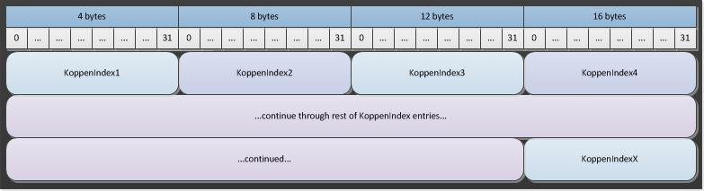

Climate file structure¶
There are two general types of climate files usable by EMOD, namely, climate files generated through actual data, referred to as “climate by data,” and climate files generated from the Koppen classification system, referred to as “climate by Koppen”. Climate data (both types) is contained in a set of two files, a metadata file with header information (<name>.bin.json) and a binary data file (<name>.bin). Both files are required.
The metadata file is a JSON-formatted file that includes a metadata section and a node offsets section. The Metadata parameter contains a JSON object with parameters, some of which are strictly informational and some of which are used by Eradication.exe. However, the informational ones may still be important to understand the provenance and meaning of the data.
In a second section, the NodeOffsets parameter contains a list of hex-encoded 16-byte values used to find the data for each given node (the NodeID).They are not 16-byte offsets, but instead, two 8-byte hex-encoded character strings. This encoding includes the source NodeID. You can map the binary data to its corresponding source NodeID by using the NodeOffset information.
The binary file contains the climate data in a sequential stream. In other words, it presents all the data for the first node, then all the data for the second node, all the way through to the last node.
To use the climate files, you must set Climate_Model to either “CLIMATE_BY_DATA” or “CLIMATE_BY_KOPPEN”, as appropriate, in the configuration file. There are also additional parameters in the configuration file you can use to scale or otherwise modify the data included in the climate files.
Climate by data¶
At this time, the EMOD executable (Eradication.exe) reads land temperature data, but does not use the data in any calculations. IDM clones the air temperature and uses that as the land temperature in the climate data files. If you are going to be constructing your own climate files, we advise you to do the same.
Metadata file¶
The following parameters in the metadata section are informational:
| Parameter | Data type | Description |
|---|---|---|
| DateCreated | string | The day the file was created. |
| Author | string | The author of the file. |
| OriginalDataYears | string | The years from which the original data was derived. |
| StartDayOfYear | string | The day of the year representing the first day in the climate file. |
| DataProvenance | string | The source of the data. |
The following parameters in the metadata section are used by Eradication.exe:
| Parameter | Data type | Description |
|---|---|---|
| IdReference | string | A unique, user-selected string that indicates the method used for generating NodeID values in the input file. For more information, see Input data file structure. |
| NodeCount | integer | The number of nodes to expect in this file. |
| DatavalueCount | integer | The number of data values per node. The number must be the same across every node in the binary file. |
| UpdateResolution | enum | The time resolution of the climate file. Available values are:
|
An example of climate by data metadata is as follows:
{
"Metadata": {
"DateCreated": "Sun Sep 25 19:02:09 2011",
"Tool": "createclimateheader.py",
"Author": "authorName",
"IdReference": "Gridded world grump2.5arcmin",
"NodeCount": 1,
"DatavalueCount": 3650,
"UpdateResolution": "CLIMATE_UPDATE_DAY",
"OriginalDataYears": "1990-1993",
"StartDayOfYear": "January 1",
"DataProvenance": "47 consecutive months of data were used to generate one average year of data that is repeated for 10 years"
},
"NodeOffsets": "144B07A400000000"
}
Binary file¶
The binary file is a stream of 4-byte floating point values that contain the data value at the data count position for a given node, running from 1 to the maximum data count value.
The binary format is as follows:

Climate by Koppen¶
The Koppen classification system is one of the most widely used climate classification systems. The Koppen classification system makes the assumption that native vegetation is the best expression of climate.
Metadata file¶
The following parameters in the metadata section are informational:
| Parameter | Data type | Description |
|---|---|---|
| DateCreated | string | The day the file was created. |
| Author | string | The author of the file. |
| DataProvenance | string | The source of the data. |
| Tool | string | The script used to create the file. |
The following parameters in the metadata section are used by Eradication.exe:
| Parameter | Data type | Description |
|---|---|---|
| IdReference | string | A unique, user-selected string that indicates the method used for generating NodeID values in the input file. For more information, see Input data file structure. |
| NodeCount | integer | The number of nodes to expect in this file. |
An example of climate by Koppen metadata is as follows:
{
"Metadata": {
"DateCreated": "Sun Sep 25 19:08:52 2011",
"Tool": "createclimateheader.py",
"Author": "authorName",
"IdReference": "Gridded world grump2.5arcmin",
"NodeCount": 2,
"DataProvenance": "Köppen-Geiger Classification System from http://koeppen-geiger.vu-wien.ac.at/"
},
"NodeOffsets": "157D075200000000157E07520000000"
}
Binary file¶
The binary file parameters use the naming convention below to store the data.
| Parameter | Data type | Description |
|---|---|---|
| KoppenIndexX | integer, 4 bytes | The Koppen Index value, with X running from 1 to the maximum number of nodes. |
The binary format is as follows:
